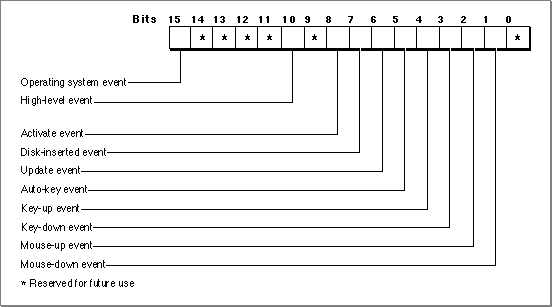

Legacy Document
Important: The information in this document is obsolete and should not be used for new development.
Important: The information in this document is obsolete and should not be used for new development.


Processing Events
Applications receive events one at a time by asking the Event Manager for the next available event. You use Event Manager routines to receive (or in the case ofEventAvail, simply to look at) the next available event that is pending for your application. You supply an event record as a parameter to the Event Manager routines that retrieve events. The Event Manager fills out the event record with the relevant information about that event and returns it to your application.Your application can use the
WaitNextEventfunction to retrieve events from the Event Manager. If no events are pending for your application, theWaitNextEventfunction may allocate processing time to other applications. If an event is pending for your application, theWaitNextEventfunction returns the next available event of a specified type and removes the returned event from your application's event stream.The
EventAvailfunction gets the next available event of a specified type and returns it to your application, but does not remove the event from your application's event stream.EventAvailthus allows your application to look at an event in the event stream without actually processing the event.
- Note
- You can also use the
GetNextEventfunction to retrieve and remove an event; however, you should useWaitNextEventto provide greater support for multitasking.
Using the WaitNextEvent Function
Your application typically callsWaitNextEventrepeatedly. The next section, "Writing an Event Loop," shows how to useWaitNextEventwith other routines to process events. This discussion focuses on theWaitNextEventfunction itself.The
WaitNextEventfunction requires four parameters:
When
- an event mask (
eventMask)- an event record (
theEvent)- a sleep value (
sleep)- a mouse region (
mouseRgn)
WaitNextEventreturns, the event record contains information about the retrieved event, if any.The
eventMaskparameter specifies the events you are interested in receiving.WaitNextEventreturns events one at a time, in order of priority and at your application's request, according to the value you specify in theeventMaskparameter. If your application specifies that it doesn't want to receive particular types of events, those events are not returned to your application when it makes a request for an event. However, those events are not removed from the event stream. (To remove events from the Operating System event queue, you can use theFlushEventsprocedure with a mask specifying only those events you wish to remove from the queue.) See "Setting the Event Mask" beginning on page 2-26 for examples of how to use constants to set the value of theeventMaskparameter.The
sleepparameter specifies the amount of time (in ticks) for which your application agrees to relinquish the processor if no events are pending for it. When that time expires or when an event becomes available for your application, the Process Manager schedules your application for execution. In general, you should specify a value greater than 0 in thesleepparameter so that other applications can receive processing time if they need it. If the user is editing text and your application needs to blink the caret at periodic intervals or uses TextEdit to blink the caret, your application should not specify a value greater than the value returned by theGetCaretTimefunction.In the
mouseRgnparameter you specify a screen region inside of which the Event Manager does not generate mouse-moved events. You should specify the region in
global coordinates. If the user moves the cursor outside of this region and your application is the foreground process, the Event Manager reports mouse-moved events. Your application should recalculate themouseRgnparameter when it receives a mouse-moved event; otherwise it will continue to receive mouse-moved events as long as the cursor is outside of the original region. If you pass an empty region or aNILregion handle, the Event Manager does not return mouse-moved events. You can use themouseRgnparameter as a convenient way to change the shape of the cursor--for example, when the user moves the cursor from the content area of a window to the scroll bar. See "Responding to Mouse-Moved Events" beginning on page 2-62 for information on how to set and change themouseRgnparameter.Listing 2-1 shows an example of using the
WaitNextEventfunction.Listing 2-1 Using the
WaitNextEventfunction
VAR eventMask: Integer; event: EventRecord; cursorRgn: RgnHandle; mySleep: LongInt; gotEvent: Boolean; eventMask := everyEvent; {accept all events} mySleep := MyGetSleep; {set an appropriate sleep value} cursorRgn := MyGetRgn; {set the region as appropriate} gotEvent := WaitNextEvent(eventMask,event,mySleep,cursorRgn);The code in Listing 2-1 specifies thatWaitNextEventshould return the next pending event of any kind, give up the processor if no events are pending, and return a mouse-moved event if the user moves the cursor out of the specified region.The
WaitNextEventfunction returns after retrieving an event or after the time specified in thesleepparameter has expired. If there are no events of the types specified by theeventMaskparameter (other than null events) pending for your application, and the time specified in thesleepparameter has not expired,WaitNextEventmay allocate processing time to background processes. Once an
event for your application occurs or the time specified in thesleepparameter
expires, your application receives processing time again.
WaitNextEventreturns a function result ofTRUEif it has retrieved any event other than a null event. If there are no events of the types specified by theeventMaskparameter (other than null events) pending for the application,WaitNextEvent
returnsFALSE.Before returning an event to your application,
WaitNextEventperforms other processing and may intercept the event. TheWaitNextEventfunction:
In System 7, the
- Calls the Operating System Event Manager function
SystemEventto determine whether the event should be handled by your application or the Operating System. For example, if the event is a Command-Shift-number key sequence, the Event Manager intercepts the event and calls the corresponding 'FKEY' resource to perform the associated action.- Makes the alarm go off if the alarm is set and the current time is the alarm time. The user sets the alarm using the Alarm Clock desk accessory.
- Calls the
SystemTaskprocedure, which gives time to each open desk accessory or device driver to perform any periodic action defined for it. A desk accessory or device driver specifies how often the periodic action should occur, andSystemTaskgives time to the desk accessory or device driver at the appropriate interval.
WaitNextEventfunction reports a suspend event to your
application when
After your application is switched out, the Event Manager directs events (other than events your application can receive in the background) to the newly activated process until the user switches back to your application or another application.
- your application is in the foreground and the user opens a desk accessory or other item from the Apple menu,
- the user clicks in the window belonging to a desk accessory or another application, or
- the user chooses another process from the Application menu.
Writing an Event Loop
In applications that are event-driven (that is, applications that decide what to do at any time by receiving and responding to events), you can obtain information about pending events by calling Event Manager routines. Since you call these routines repeatedly, the section of code in which you request events from the Event Manager usually takes the form of a loop; this section of code is called the event loop.Listing 2-2 shows a simple event loop (an application-defined procedure called
MyEventLoop) for an application running in System 7.
PROCEDURE MyEventLoop; VAR cursorRgn: RgnHandle; gotEvent: Boolean; event: EventRecord; BEGIN cursorRgn := NewRgn; {pass an empty region the first time thru} REPEAT gotEvent := WaitNextEvent(everyEvent, event, MyGetSleep, cursorRgn); IF (event.what <> kHighLevelEvent) AND (NOT gInBackground) THEN MyAdjustCursor(event.where, cursorRgn); IF gotEvent THEN {the event isn't a null event, } DoEvent(event) { so handle it} ELSE {no event (other than null) to handle } DoIdle(event); { right now, so do idle processing} UNTIL gDone; {loop until user quits} END;TheMyEventLoopprocedure repeatedly usesWaitNextEventto retrieve events. TheWaitNextEventfunction returns a Boolean value ofFALSEif there are no events of the specified types other than null events pending for the application.WaitNextEventreturnsTRUEif it has retrieved any event other than a null event.After
WaitNextEventreturns, theMyEventLoopprocedure first calls an application- defined routine,MyAdjustCursor, to adjust the cursor as necessary. You usually adjust the cursor in response to mouse-moved events, and often in response to other events as well. This code adjusts the cursor once every time through the event loop, when the application receives any event other than a high-level event. The code does not adjust the cursor if the event is a high-level event, because thewherefield of a high-level event contains the event ID, not the location of the cursor. The code also does not adjust the cursor if this application is in the background, as the foreground process is responsible for setting the appearance of the cursor.If
WaitNextEventretrieved any event other than a null event, the event loop callsDoEvent, an application-defined procedure, to process the event. Otherwise, the procedure calls an application-defined idling procedure,DoIdle.
If you intend to design your application to run in either a single-application environment (such as System 6 without MultiFinder) or a multiple-application environment,
- Note
- If your application uses modeless dialog boxes, you need to appropriately handle events in them. You can choose to handle events for modeless dialog boxes using the same routines that you use to handle events in other windows; this is the approach used throughout this chapter. Alternatively, you can choose to call the
IsDialogEventfunction in your event loop. See "Handling Events in a Dialog Box" on page 2-29 for information on handling events in alert boxes, modal dialog boxes, movable modal dialog boxes, and modeless dialog boxes. For additional information on dialog boxes, see the chapter "Dialog Manager" in this book.
the very beginning of your event loop should test to make sure theWaitNextEventfunction is available. IfWaitNextEventis not available, your code should useGetNextEventto retrieve events. If your code usesGetNextEvent, it should also
callSystemTaskto allow desk accessories to perform periodic actions. However,
your code should always useWaitNextEventif it is available, rather thanGetNextEvent. If your application callsWaitNextEvent, it should not call theSystemTaskprocedure.The event loop shown in Listing 2-2 calls an application-defined procedure,
DoEvent, todetermine what kind of event the call toWaitNextEventretrieved. Listing 2-3 defines a simpleDoEventprocedure. TheDoEventprocedure examines the value of thewhatfield of the event record to determine the type of event received and then calls an appropriate application-defined routine to further process the event.
PROCEDURE DoEvent (event: EventRecord); VAR window: WindowPtr; activate: Boolean; BEGIN CASE event.what OF mouseDown: DoMouseDown(event); mouseUp: DoMouseUp(event); keyDown, autoKey: DoKeyDown(event); activateEvt: BEGIN window := WindowPtr(event.message); activate := BAnd(event.modifiers, activeFlag) <> 0; DoActivate(window, activate, event); END; updateEvt: DoUpdate(WindowPtr(event.message)); diskEvt: DoDiskEvent(event); osEvt: DoOSEvent(event); kHighLevelEvent: DoHighLevelEvent(event); END; {of case} END;The next sections describe how to set the event mask, handle events in dialog boxes,
and create your application's'SIZE'resource. Following sections show code that can handle each kind of event.Setting the Event Mask
Several of the Event Manager routines can be restricted to operate on a specific event type or group of types. You do this by specifying the event types you want your application to receive, thereby disabling (or "masking out") the events you are not interested in receiving. To specify which event types an Event Manager routine governs, you supply a parameter known as an event mask.The event mask is an integer with one bit position for each event type. If the bit representing a particular event type is set, then the Event Manager returns events of
that type. If the bit is set to 0, the Event Manager does not return events of that type. To accept all types of events, set every bit of the event mask to 1. You can do this using the constanteveryEvent.
CONST everyEvent = -1; {every event}Figure 2-6 shows the bits corresponding to each event type in the event mask.
You can use these constants when referring to the bits in the event mask that correspond to each individual event type:
CONST mDownMask = 2; {mouse-down event (bit 1)} mUpMask = 4; {mouse-up event (bit 2)} keyDownMask = 8; {key-down event (bit 3)} keyUpMask = 16; {key-up event (bit 4)} autoKeyMask = 32; {auto-key event (bit 5)} updateMask = 64; {update event (bit 6)} diskMask = 128; {disk-inserted event (bit 7)} activMask = 256; {activate event (bit 8)} highLevelEventMask = 1024; {high-level event (bit 10)} osMask = -32768; {operating-system event (bit 15)}You can select any subset of events by adding or subtracting these constants. For example, you can use this code to accept only high-level events and mouse-down events and mask out all other events:
myErr := WaitNextEvent(highLevelEventMask + mDownMask, myEvent, mySleep, myMRgnHnd);TheeveryEventconstant indicates that you wish to receive every type of event. To accept all events except mouse-up events, you can use the code:
myErr := WaitNextEvent(everyEvent - mUpMask, myEvent, mySleep, myMRgnHnd);Masking out specific types of events does not remove those events from the event stream. If a type of event is masked out, the Event Manager simply ignores it when reporting events from the event stream. Note that you cannot mask out null events by setting the event mask. The Event Manager always returns a null event if no other events are pending. However, if you do not want the Event Manager to report null events to your application when it is in the background, you can set thecannotBackgroundflag in your application's'SIZE'resource.In most cases you should always use
everyEventas your event mask. The user expects most applications to respond to keyboard, mouse, update, and other events.The types of events returned to your application are also affected by the system event mask. The Event Manager maintains a system event mask for each application. The system event mask controls which low-level event types get posted in the Operating System event queue. The Event Manager uses the system event mask of the current process (the process that is currently executing and the process associated with the
CurrentA5global variable) when determining which low-level events to post in the Operating System event queue. The system event mask is an integer with 1 bit for
each corresponding low-level event type. These constants refer to the bits that represent the corresponding low-level event types in the system event mask:
CONST mDownMask = 2; {mouse-down (bit 1)} mUpMask = 4; {mouse-up (bit 2)} keyDownMask = 8; {key-down (bit 3)} keyUpMask = 16; {key-up (bit 4)} autoKeyMask = 32; {auto-key (bit 5)} diskMask = 128; {disk-inserted (bit 7)}When a low-level event (other than an update or activate event) occurs, the Operating System Event Manager posts the low-level event in the Operating System event queue only if the bit corresponding to the low-level event type is set in the system event mask of the current process. When your application starts, the Operating System initializes the system event mask of your application to post mouse-up, mouse-down, key-down, auto-key, and disk-inserted events in the Operating System event queue. Thus, the system event mask has this initial setting:
systemEventMask := everyEvent - keyUpMask;Your application should not change the system event mask except to enable key-up events if your application needs to respond to key-up events. (Most applications ignore key-up events.) If your application needs to receive key-up events, you can change the system event mask using the Operating System Event Manager procedureSetEventMask. Note that your application cannot rely on receiving key-up events when it is not the current process. For example, if your application is the foreground (and current) process and a minor switch occurs, the Event Manager uses the system event mask of the background process (now the current process) when posting low-level event types. When your application becomes the current process again, the Event Manager uses the system event mask of your application when posting low-level events.Handling Events in a Dialog Box
If your application uses alert boxes, modal dialog boxes, movable modal dialog boxes,
or modeless dialog boxes, you need to make sure your application handles events for them appropriately.To display and handle events in alert boxes, you use the Dialog Manager functions
Alert,NoteAlert,CautionAlert, andStopAlert. The Dialog Manager handles all of the events generated by the user until the user clicks a button (typically the OK or Cancel button). When the user clicks the OK or Cancel button, the alert box functions highlight the button that was clicked, close the alert box, and report the user's selection to your application. Your application is responsible for performing the appropriate action associated with that button.For modal dialog boxes, you can use the Dialog Manager procedure
ModalDialog. The Dialog Manager handles most of the user interaction until the user selects an item. TheModalDialogprocedure then reports that the user selected an enabled item, and your application is responsible for performing the action associated with that item. Your application typically callsModalDialogrepeatedly, responding to clicks on enabled items as reported byModalDialog, until the user selects OK or Cancel.For alert boxes and modal dialog boxes, you should also supply an event filter function as one of the parameters to the alert box functions or
ModalDialogprocedure. As the user interacts with the alert or modal dialog box, these functions pass events to your event filter function before handling each event. Your event filter function can handle any events not handled by the Dialog Manager or, if necessary, can choose to handle events normally handled by the Dialog Manager. For more information on filter functions for alert and dialog boxes, see the chapter "Dialog Manager" in this book.To handle events in movable modal dialog boxes, you can use the Dialog Manager functions
IsDialogEventandDialogSelector you can use other Toolbox routines to handle events without using the Dialog Manager.For modeless dialog boxes, you can choose to handle events in them using an approach similar to the one you use to handle events in other windows; that is, when you receive an event, you first determine the type of event that occurred and then take the appropriate action based on the type of window that is in front. If a modeless dialog box is in front, you can provide code that takes any actions specific to that modeless dialog box and call the
DialogSelectfunction to handle any events that your code doesn't handle. This is the approach used throughout this chapter. Alternatively, you can choose to call theIsDialogEventfunction in your event loop. If you do this, you can use theIsDialogEventfunction to determine whether the event involves a modeless dialog box that belongs to your application. If the event involves a modeless dialog box (including null events) and a modeless dialog box is active,IsDialogEventreturnsTRUE. Otherwise,IsDialogEventreturnsFALSE.If
IsDialogEventreturnsTRUE, your application can check to see what type of event occurred and, depending on the type of event, it can choose to handle the event itself.Regardless of the approach you use, if your application chooses not to handle the event, it should call
DialogSelect. TheDialogSelectfunction handles events for modeless dialog boxes (including null events). It also blinks the caret in editable text items when necessary.For more information on the
DialogSelectfunction and events in dialog boxes, see the chapter "Dialog Manager" in this book.